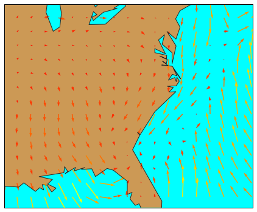
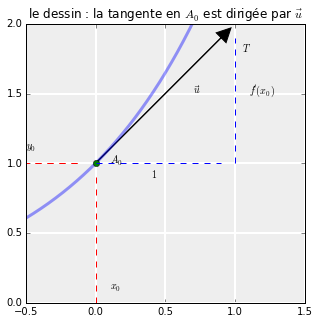
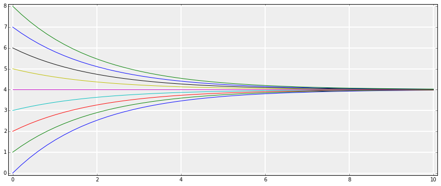
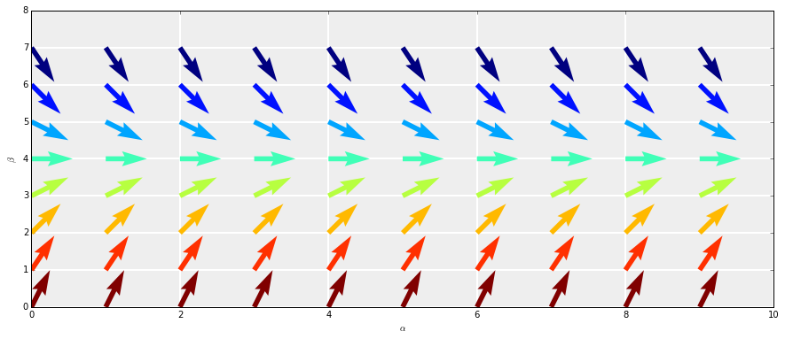

Géométrie d'une EDL1
Contents
Une image pour commencer
Je vais partir de l'image suivante : imagine, Biwane, que tu es un grain de pollen qui se laisse mouvoir au gré des vents. Pour t'aider, je te mets dans le contexte : tu voles au dessus des côtes californiennes.
from __future__ import division from mpl_toolkits.basemap import Basemap from osgeo import gdal %matplotlib inline import matplotlib.pyplot as plt import numpy as np plt.figure(figsize=(15,6)) map = Basemap(llcrnrlon=-93.7, llcrnrlat=28., urcrnrlon=-66.1, urcrnrlat=39.5, projection='lcc', lat_1=30., lat_2=60., lat_0=34.83158, lon_0=-98.) ds = gdal.Open("../sample_files/wrf.tiff") lons = ds.GetRasterBand(4).ReadAsArray() lats = ds.GetRasterBand(5).ReadAsArray() u10 = ds.GetRasterBand(1).ReadAsArray() v10 = ds.GetRasterBand(2).ReadAsArray() speed = np.sqrt(u10*u10 + v10*v10) x, y = map(lons, lats) yy = np.arange(0, y.shape[0], 4) xx = np.arange(0, x.shape[1], 4) points = np.meshgrid(yy, xx) map.drawmapboundary(fill_color='aqua') map.fillcontinents(color='#cc9955', lake_color='aqua', zorder = 0) map.drawcoastlines(color = '0.15') map.quiver(x[points], y[points], u10[points], v10[points], speed[points], cmap=plt.cm.autumn) plt.show()
Si tu t'imagines en un point de cette carte, je suis certain que tu vas réussir à deviner l'allure de ta trajectoire.
Une EDL1, c'est du vent
Eh bien, Biwane, figure-toi qu'une équation différentielle linéaire d'ordre 1 à coefficients constants peut se comprendre exactement de la même façon. En s'appuyant sur une intuition géométrique, on peut deviner l'allure de la solution partant d'une condition initiale donnée (ou, comme quand tu étais un grain de pollen, on peut deviner ta trajectoire partant d'un point donné de la carte ai tu te laisses pousser par les vents).
Pour illustrer concrètement ceci, je vais, dans toute la suite, prendre l'exemple de l'équation différentielle suivante :
L'inconnue est la fonction \(v\). Je te l'accorde, on ne voit pas trop où sont les flèches du dessin précédent, donc l'analogie semble pour le moment audacieuse.
Trois résultats de maths à savoir avant
Pour débusquer ces flèches, voici mes trois résultats à avoir en tête :
-
(R1) Le premier est le suivant : si une fonction \(f\) est dérivable en un point \(x_0\) de son domaine, alors : la courbe de représentatvie \(C_f\) de \(f\) admet au point \(A_0(x_0,f(x_0))\) une tangente \(T\).
-
(R2) L'équation de cette tangente \(T\) est :
\begin{equation*} y = f'(x_0)(x-x_0) +f(x_0) \end{equation*} -
(R3) Un vecteur directeur de cette tangente est le vecteur \(\vec{u}(1,f'(x_0))\). Voir le dessin plus bas.
-
(R4) Sur un petit intervalle partant de \(x_0\), la courbe \(C_f\) est quasiment confondue avec \((T)\).
Remarque. Je sais, ça fait quatre résultats, mais dans la vie il y a trois types de gens : ceux qui savent compter et les autres.
Mais arrêtons de blaguer et illustrons ces résultats sur un dessin :
from scipy import exp fig, ax = plt.subplots(figsize=(5, 5), subplot_kw={'axisbg':'#EEEEEE', 'axisbelow':True}); ax.grid(color='w', linewidth=2, linestyle='solid'); x = np.linspace(-0.5, 1.5, 1000) L=np.arange(-1,0,0.1) C=np.arange(0,1,0.1) L1=np.arange(0,1,0.1) C1=np.arange(1,2,0.1) ax.plot(x, exp(x),lw=3, alpha=0.4) ax.set_xlim(-0.5, 1.5) ax.set_ylim(0, 2) plt.title(r'le dessin : la tangente en $A_0$ est'+u' dirigée'+r' par $\vec{u}$') plt.arrow(0,1,0.9,0.9,head_width=0.1, head_length=0.1, fc='black', ec='black') plt.text(0.1,0.1,r'$x_0$') plt.text(-0.5,1.1,r'$y_0$') plt.text(0.1,1,r'$A_0$') plt.plot(0,1,'o') plt.plot(L, np.ones(L.shape),'r--') plt.plot(L1, np.ones(L1.shape),'b--') plt.plot(np.zeros(L.shape),C,'r--') plt.text(0.7,1.5,r'$\vec{u}$') plt.plot(L, np.ones(L.shape),'r--') plt.plot(np.ones(C1.shape),C1,'b--') plt.text(0.4,0.9,r'$1$') plt.text(1.1,1.5,r"$f'(x_0)$") plt.text(1.05,1.8,r"$T$")
Ça y est, on commence à voir des flèches.
Mais revenons à l'équation différentielle
Il s'agit toujours de : \(v'+ \dfrac{1}{2}v = 2.\) Avec les notations du cours, \(a=1/2\) et \(b=2\).
a,b = 0.5,2
D'après le cours, les solutions de l'équation \((E)\) sont données par la formule dans laquelle $k$ est un réel quelconque :
Il y a donc une infinité de solutions.
Si on ajoute la condition initiale en \(t=0\) par exemple : $v(0)=v_0$, on obtient la solution unique donnée par :
Je trace quelques unes de ces solutions en faisant varier la condition initiale \(v_0\) entre 0 et 8 par exemple :
t0=0 tmin, tmax = 0,10 # je trace les solutions sur l'intervalle [0,10] vmin, vmax = 0,8 t=np.linspace(tmin,tmax,50) # 50 points regulierement espacés dans [0,10]
fig, ax = plt.subplots(figsize=(15, 6), subplot_kw={'axisbg':'#EEEEEE', 'axisbelow':True}); ax.grid(color='w', linewidth=2, linestyle='solid'); plt.axis([tmin-0.1,tmax+ 0.1,vmin-0.1,vmax+ 0.1]) for v0 in range(0,9): # je fais varier la condition initiale v=b/a+ (v0-b/a) * exp(-a*(t-t0)) # je calcule la solution correspondante plt.plot(t,v) # je trace la courbe
Au milieu d'un champ de flèches
Maintenant, considérons une solution \(v\) de \((E)\). Alors en tout point \(t\), on a, par définition de solution de \((E)\) :
Mettons que la courbe de passe par un point de coordonnées \((\alpha,\beta)\). Ça veut dire que \(t=\alpha,\) \(v(t)=\beta\) (tu me suis Biwane ?)
Or si je regarde la relation \((\star)\), cela signifie que \(v'(t)=2-\dfrac{1}{2}v(t) = 2-\beta/2\). Ainsi, au point \((\alpha,\beta)\) dans le plan, la tangente à la solution passant par ce point est dirigée par le vecteur \(\vec u(1, 2-\beta/2)\). En résumé :
Si je connaîs un point de la courbe de \(v\) , je sais comment est dirigée la tangente à la courbe en ce point d'après (R3). Normalement, ça devrait m'aider à tracer cette courbe. Enfin, au moins sur un petit intervalle, puisque la courbe ressemble à sa tangente localement d'après R4 (Tu es toujours là Biwane ?).
Du coup, j'ai imaginé un réseau de points \((\alpha, \beta)\) régulièrement répartis sur le dessin. Et pour chaque point, j'ai tracé la direction qu'aurait la tangente de la courbe d'une solution passant par ce point :
fig, ax = plt.subplots(figsize=(15, 6), subplot_kw={'axisbg':'#EEEEEE', 'axisbelow':True}); ax.grid(color='w', linewidth=2, linestyle='solid'); alpha_step=1 beta_step=1 A,B=np.meshgrid(np.arange(tmin,tmax,alpha_step),np.arange(vmin,vmax,beta_step)) # mon réseau de points (alpha, beta) U=np.ones(A.shape) #les coordonnées des vecteurs tangents V=b-a*B norme=np.sqrt(1+V**2) # comme je veux simplement la direction des tangentes, la longueur Unormalized=U/norme # flèches ne n'importe pas Vnormalized=V/norme # du coup je les redimensionne toutes Q=plt.quiver(A,B,Unormalized,Vnormalized,9-B,pivot='right') plt.axis([tmin,tmax,vmin,vmax]); plt.xlabel(r'$\alpha$') plt.ylabel(r'$\beta$')
C'est vrai que rien qu'en regardant ces flèches, on a la sensation de deviner l'allure des courbes solutions qu'on avait dessiné plus haut. Cet ensemble de flèches dessiné dans le plan s'appelle le champ de vecteurs associé à l'EDL \((E)\). Dans un prochain billet, j'expliquerai la méthode d'Euler en s'appuyant sur cette approche géométrique.